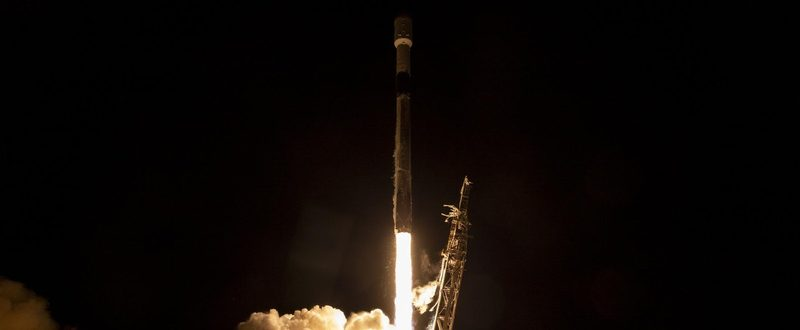

"Terrestrial compute will be peanuts"
Musk said orbital compute could pass Earth's by the end of 2028, congratulated the team on 700 Falcon 9 flights, and cheered Gwynne Shotwell's stock gift.
"Terrestrial compute will be peanuts compared to orbital compute. Orbital compute deployed per month probably exceeds terrestrial around the end of 2028 and then far exceeds it in 2029," Musk wrote at 10:41 p.m. EDT Friday. On Saturday at 9:42 a.m. he went further: "Launching super intelligence satellites into deep space with a mass driver on the Moon can achieve >>petawatt/year capability, which would far exceed the best case value of Earth's economy."


"Future super intelligence compute will obviously be overwhelmingly in space. By 'overwhelmingly', I mean that it will round up to 100%!" he posted at 10:08 a.m. EST Monday. When investor Shaun Maguire said he would post "a systems level analysis of orbital compute over the next week or two," Musk replied: "Absolutely."
At 10:43 p.m. Monday he made the case for cooling: "Yeah, much easier to cool in space. ~1300 W/m^2 is easily achievable for an aluminum radiator pointed away from the Sun, as it is mostly just seeing cosmic background radiation at ~3 degrees above absolute zero! Solar panels generate ~250 W/m^2, so you should expect them to have ~5 times the area of the radiator." To a reply that radiative heat transfer "grows gigantically" at high temperatures, he wrote: "Yup, T^4 scales super fast."
Over 700 Falcon 9 flights
"Congrats to the @SpaceX team on over 700 Falcon 9 flights!" Musk posted at 9:32 a.m. EDT Saturday. The quoted post said Starlink 15-16 marked the 700th mission on Oct. 27.
On Saturday morning he also marked "14 years ago" over a 2012 60 Minutes clip from the SpaceX factory in which he said, "I'm probably not the guy that most people would bet on."
Shotwell's gift of shares
"Cool," Musk wrote with a heart at 6:11 p.m. EDT Friday, quoting SpaceX President Gwynne Shotwell's post: "Robert and I are thrilled that our gift of over 2 million shares of SpaceX stock will be distributed to children's Trump accounts in December!" The first gift goes to 11- to 17-year-olds in zip codes with a median family income of $57,000 or less, she wrote, with a second gift planned for eligible children in military families serving overseas (Reuters).
"Starlink saves lives"
Musk posted the phrase at 8:49 a.m. EST Monday about a Colorado rescue. A 37-year-old solo hiker on the Four Pass Loop texted "Please help me" on Oct. 29, and five Crested Butte Search and Rescue volunteers hiked through the night "carrying a Starlink satellite communication system that allowed them to remain in contact with their mission coordinator," Unofficial Networks reported. A Colorado Army National Guard Black Hawk hoisted her out the next morning.